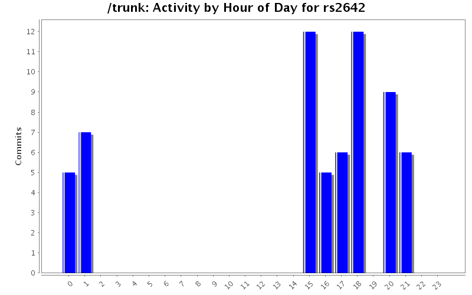
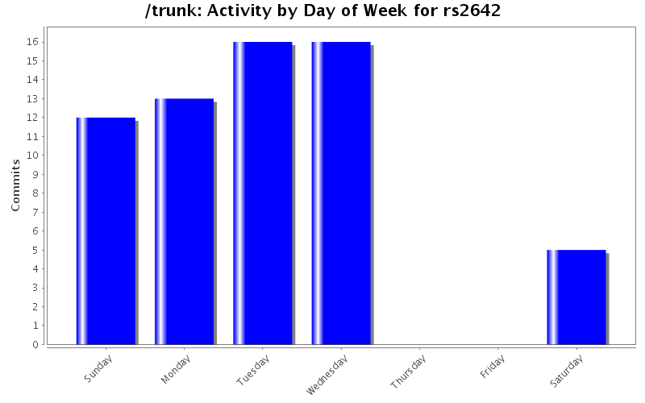
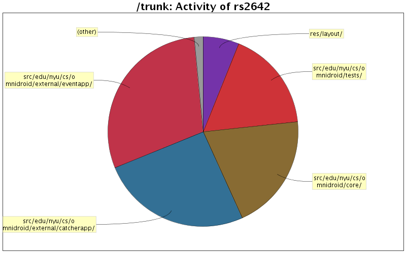

| Directory | Changes | Lines of Code | Lines per Change |
|---|---|---|---|
| Totals | 62 (100.0%) | 1246 (100.0%) | 20.0 |
| src/edu/nyu/cs/omnidroid/external/eventapp/ | 12 (19.4%) | 370 (29.7%) | 30.8 |
| src/edu/nyu/cs/omnidroid/external/catcherapp/ | 12 (19.4%) | 318 (25.5%) | 26.5 |
| src/edu/nyu/cs/omnidroid/core/ | 8 (12.9%) | 248 (19.9%) | 31.0 |
| src/edu/nyu/cs/omnidroid/tests/ | 14 (22.6%) | 215 (17.3%) | 15.3 |
| res/layout/ | 4 (6.5%) | 76 (6.1%) | 19.0 |
| / | 5 (8.1%) | 16 (1.3%) | 3.2 |
| res/values/ | 2 (3.2%) | 3 (0.2%) | 1.5 |
| src/edu/nyu/cs/omnidroid/masterapp/ | 3 (4.8%) | 0 (0.0%) | 0.0 |
| src/edu/nyu/cs/omnidroid/ | 2 (3.2%) | 0 (0.0%) | 0.0 |

Added comments/javadocs
13 lines of code changed in 1 file:
added comments/javadocs
11 lines of code changed in 1 file:
added comments/java-docs
9 lines of code changed in 1 file:
3 lines of code changed in 1 file:
added comments/java-docs
12 lines of code changed in 1 file:
added comments
7 lines of code changed in 1 file:
added javadocs
49 lines of code changed in 1 file:
working version
4 lines of code changed in 1 file:
2 lines of code changed in 1 file:
sms catcher
52 lines of code changed in 1 file:
2 lines of code changed in 1 file:
37 lines of code changed in 1 file:
76 lines of code changed in 5 files:
9 lines of code changed in 3 files:
3 lines of code changed in 2 files:
Updated Catcher
9 lines of code changed in 1 file:
51 lines of code changed in 3 files:
Catcher App Partial
35 lines of code changed in 1 file:
Changed the AndroidManifest.xml file to accommodate the Event Thrower
1 lines of code changed in 1 file:
0 lines of code changed in 1 file:
(17 more)